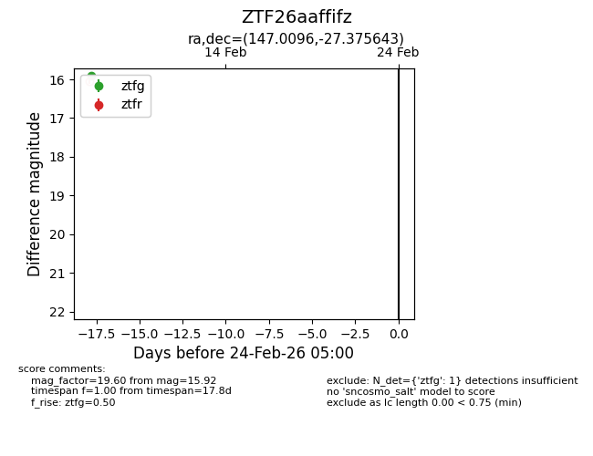
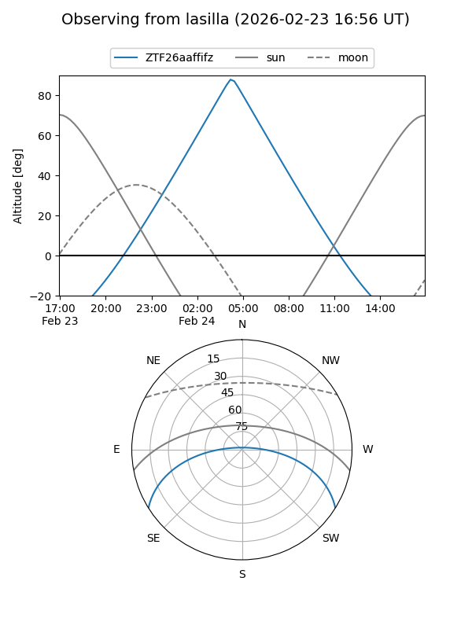
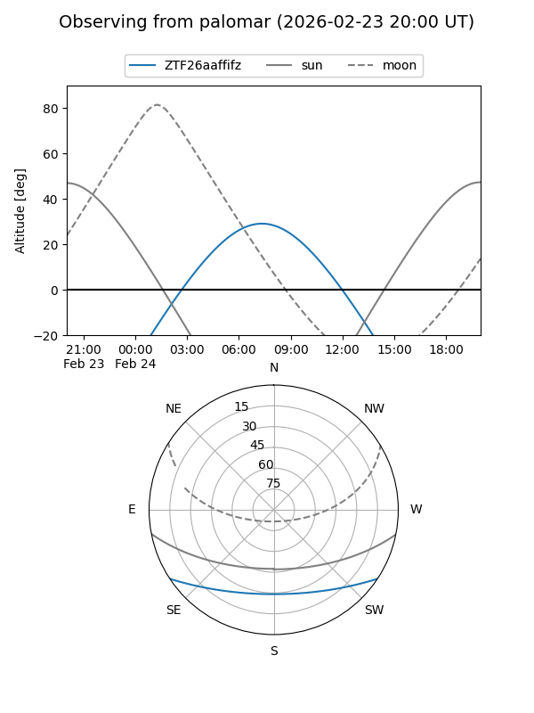

ZTF26aaffifz
Target ZTF26aaffifz at 2026-02-24 09:08
Aliases and brokers:
FINK: link
Lasair: link
ALeRCE: link
alt names
ZTF26aaffifz (ztf,fink_ztf)
Coordinates:
equatorial (ra, dec) = 147.0096,-27.37564
equatorial (HMS+DMS) = 09:48:02.30,-27:22:32.32
galactic (l, b) = (260.2646,+19.92670)
Flags:
Photometry:
last ztfg=15.92
1 ztfg detections
Lightcurve

Visibility


Additional plots